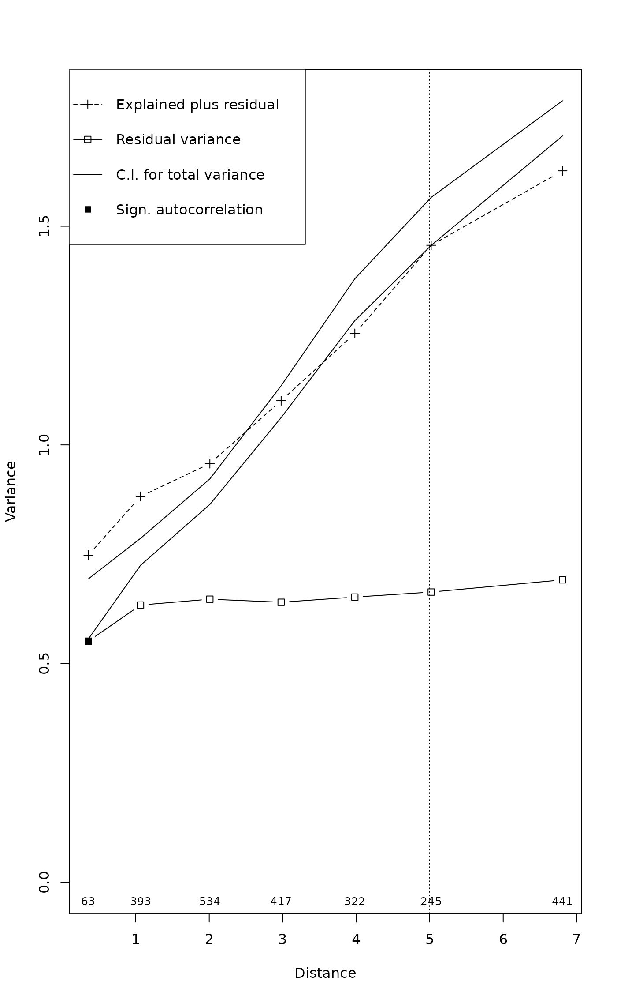

Functions for performing and displaying a spatial partitioning of cca or rda results
mso.RdThe function mso adds an attribute vario to
an object of class "cca" that describes the spatial
partitioning of the cca object and performs an optional
permutation test for the spatial independence of residuals. The
function plot.mso creates a diagnostic plot of the spatial
partitioning of the "cca" object.
mso(object.cca, object.xy, grain = 1, round.up = FALSE, permutations = 0) msoplot(x, alpha = 0.05, explained = FALSE, ylim = NULL, legend = "topleft", ...)
Arguments
| object.cca | |
|---|---|
| object.xy | A vector, matrix or data frame with the spatial
coordinates of the data represented by |
| grain | Interval size for distance classes. |
| round.up | Determines the choice of breaks. If false, distances are rounded to the nearest multiple of grain. If true, distances are rounded to the upper multiple of grain. |
| permutations | a list of control values for the permutations
as returned by the function |
| x | A result object of |
| alpha | Significance level for the two-sided permutation test of the Mantel statistic for spatial independence of residual inertia and for the point-wise envelope of the variogram of the total variance. A Bonferroni-type correction can be achieved by dividing the overall significance value (e.g. 0.05) by the number of distance classes. |
| explained | If false, suppresses the plotting of the variogram of explained variance. |
| ylim | Limits for y-axis. |
| legend | The x and y co-ordinates to be used to position the legend.
They can be specified by keyword or in any way which is accepted
by |
| ... | Other arguments passed to functions. |
Details
The Mantel test is an adaptation of the function mantel of the
vegan package to the parallel testing of several distance classes. It
compares the mean inertia in each distance class to the pooled mean
inertia of all other distance classes.
If there are explanatory variables (RDA, CCA, pRDA, pCCA) and a
significance test for residual autocorrelation was performed when
running the function mso, the function plot.mso will
print an estimate of how much the autocorrelation (based on
significant distance classes) causes the global error variance of the
regression analysis to be underestimated
Value
The function mso returns an amended cca or rda
object with the additional attributes grain, H,
H.test and vario.
The grain attribute defines the interval size of the distance classes .
H is an object of class 'dist' and contains the geographic distances between observations.
H.test contains a set of dummy variables that describe
which pairs of observations (rows = elements of object$H) fall in
which distance class (columns).
The vario attribute is a data frame that contains some or all of the following components for the rda case (cca case in brackets):
HDistance class as multiples of grain.
DistAverage distance of pairs of observations in distance class H.
- n
Number of unique pairs of observations in distance class H.
AllEmpirical (chi-square) variogram of total variance (inertia).
SumSum of empirical (chi-square) variograms of explained and residual variance (inertia).
CAEmpirical (chi-square) variogram of residual variance (inertia).
CCAEmpirical (chi-square) variogram of explained variance (inertia).
pCCAEmpirical (chi-square) variogram of conditioned variance (inertia).
seStandard error of the empirical (chi-square) variogram of total variance (inertia).
CA.signifP-value of permutation test for spatial independence of residual variance (inertia).
References
Wagner, H.H. 2004. Direct multi-scale ordination with canonical correspondence analysis. Ecology 85: 342--351.
Note
The function is based on the code published in the Ecological Archives E085-006 (doi: 10.1890/02-0738 ).
See also
Function cca and rda,
cca.object.
Examples
## Reconstruct worked example of Wagner (submitted): X <- matrix(c(1, 2, 3, 2, 1, 0), 3, 2) Y <- c(3, -1, -2) tmat <- c(1:3) ## Canonical correspondence analysis (cca): Example.cca <- cca(X, Y) Example.cca <- mso(Example.cca, tmat)#>msoplot(Example.cca)Example.cca$vario#> H Dist n All Sum CA CCA se #> 1 1 1 2 0.25 0.3456633 0.07461735 0.2710459 0 #> 2 2 2 1 1.00 0.8086735 0.01147959 0.7971939 NA#>msoplot(Example.ca)## Unconstrained ordination with test for autocorrelation ## using oribatid mite data set as in Wagner (2004) data(mite) data(mite.env) data(mite.xy) mite.cca <- cca(log(mite + 1)) mite.cca <- mso(mite.cca, mite.xy, grain = 1, permutations = 99) msoplot(mite.cca)mite.cca#> Call: mso(object.cca = mite.cca, object.xy = mite.xy, grain = 1, #> permutations = 99) #> #> Inertia Rank #> Total 1.164 #> Unconstrained 1.164 34 #> Inertia is scaled Chi-square #> #> Eigenvalues for unconstrained axes: #> CA1 CA2 CA3 CA4 CA5 CA6 CA7 CA8 #> 0.3662 0.1328 0.0723 0.0658 0.0559 0.0481 0.0418 0.0391 #> (Showing 8 of 34 unconstrained eigenvalues) #> #> mso variogram: #> #> H Dist n All CA CA.signif #> 0 0 0.3555 63 0.6250 0.6250 0.01 #> 1 1 1.0659 393 0.7556 0.7556 0.01 #> 2 2 2.0089 534 0.8931 0.8931 0.01 #> 3 3 2.9786 417 1.0988 1.0988 0.02 #> 4 4 3.9817 322 1.3321 1.3321 0.01 #> 5 5 5.0204 245 1.5109 1.5109 0.01 #> 10 10 6.8069 441 1.7466 1.7466 0.01 #> #> Permutation: free #> Number of permutations: 99 #>## Constrained ordination with test for residual autocorrelation ## and scale-invariance of species-environment relationships mite.cca <- cca(log(mite + 1) ~ SubsDens + WatrCont + Substrate + Shrub + Topo, mite.env) mite.cca <- mso(mite.cca, mite.xy, permutations = 99) msoplot(mite.cca)#> Error variance of regression model underestimated by 0.4 percentmite.cca#> Call: mso(object.cca = mite.cca, object.xy = mite.xy, permutations = #> 99) #> #> Inertia Proportion Rank #> Total 1.1638 1.0000 #> Constrained 0.5211 0.4478 11 #> Unconstrained 0.6427 0.5522 34 #> Inertia is scaled Chi-square #> #> Eigenvalues for constrained axes: #> CCA1 CCA2 CCA3 CCA4 CCA5 CCA6 CCA7 CCA8 CCA9 CCA10 #> 0.31207 0.06601 0.04117 0.02938 0.02438 0.01591 0.01201 0.00752 0.00612 0.00373 #> CCA11 #> 0.00284 #> #> Eigenvalues for unconstrained axes: #> CA1 CA2 CA3 CA4 CA5 CA6 CA7 CA8 #> 0.07888 0.06752 0.05457 0.04023 0.03855 0.03491 0.03233 0.02692 #> (Showing 8 of 34 unconstrained eigenvalues) #> #> mso variogram: #> #> H Dist n All Sum CA CCA se CA.signif #> 0 0 0.3555 63 0.6250 0.7479 0.5512 0.1967 0.03506 0.01 #> 1 1 1.0659 393 0.7556 0.8820 0.6339 0.2482 0.01573 0.22 #> 2 2 2.0089 534 0.8931 0.9573 0.6473 0.3100 0.01487 0.77 #> 3 3 2.9786 417 1.0988 1.1010 0.6403 0.4607 0.01858 0.35 #> 4 4 3.9817 322 1.3321 1.2548 0.6521 0.6027 0.02439 0.95 #> 5 5 5.0204 245 1.5109 1.4564 0.6636 0.7928 0.02801 0.38 #> 10 10 6.8069 441 1.7466 1.6266 0.6914 0.9351 0.02052 0.12 #> #> Permutation: free #> Number of permutations: 99 #>